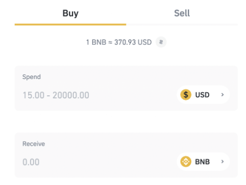

Dash2Trade recently sold its entire pre-sale hard cap allocation of 32.5 billion tokens – 10 days before the campaign was set to conclude. This translates into 32.5% of the entire Dash2Trade supply. The good news, however, is that you can still get in on the action by purchasing Dash2Trade tokens on Pancakeswap – with the official listing scheduled for January 26th, 2022 at 6 PM (GMT). If you’re not quite sure how token purchases work on Pancakeswap – this beginner’s guide will walk you through the Dash2Trade investment process step-by-step.
If you’ve got a bit of experience with the Pancakeswap exchange, this quickfire guide on how to buy Dash2Trade should suffice.
Dash2Trade Contract Address: insert contract address
If you need more guidance on how to buy Dash2Trade via Pancakeswap, you will find a detailed walkthrough in the sections below.
Although Pancakeswap has opened up the doors to innovative projects like Dash2Trade – the investment process can be somewhat challenging at first.
To help clear the mist, we are now going to walk you through the process of buying Dash2Trade every step of the way.
Dash2Trade – like all projects that operate on the Binance Smart Chain, will initially be paired with BNB on Pancakeswap. In simple terms, this means that you will need to have BNB tokens to be able to buy Dash2Trade.
As such, if you do not have any BNB tokens to hand – you will need to purchase some. If, however, you do own BNB already, you can move on to the next step.
If you’re wondering where to buy BNB, you’ve got dozens of brokers and exchanges to choose from. After all, BNB is one of the largest cryptocurrencies in this industry in terms of market cap.
We, however, would suggest buying BNB from the Binance website itself – as the process is relatively straightforward.
Buy LBLOCK on Pancakeswap
Buy BNB at Binance
Here’s how to buy BNB via Binance:
Open Account: Open an account with Binance. Note, if you’re from the US, you’ll need to go through the US version of Binance. The required steps are the same nonetheless.
KYC: If you’re looking to buy BNB instantly with your debit/credit card – you’ll need to go through a quick KYC process. This means uploading a copy of your government-issued ID. From our experience, you should be verified in under two minutes.
Go to BNB Purchase Page: At the top of the page, hover your mouse over the ‘Buy Crypto’ button and click on ‘Credit/Debit Card’. Your local currency should automatically update, based on the location you are accessing the Binance website from.
Enter Stake: In the ‘Receive’ box, search for ‘BNB’. Next, enter the amount of BNB you would like to buy – in terms of your local currency. For instance, if you enter $100 – the respective amount in BNB tokens will update based on current exchange rates.
Buy BNB – Finally, you will be asked to enter your debit/credit card details. After you have checked that everything has been entered correctly – you can confirm the purchase.
Within a couple of seconds, you will now be able to view the BNB tokens that you just bought in your Binance wallet.
Now that you have purchased BNB, you will need to transfer the tokens over to a private cryptocurrency wallet that can connect to the Binance Smart Chain. If you’ve already got a wallet with an allocation of BNB tokens – you can once again skip this step.
If not, we would suggest that you consider using Trust Wallet – which is backed by the Binance exchange itself. Before you can transfer the tokens over, you will need to download and set up Trust Wallet on your mobile device.
Download Trust Wallet: Head over to the Google Play or App Store and search for ‘Trust Wallet’. You can then download the app to your mobile device.
Create New Wallet: Open the Trust Wallet app that you just downloaded and click on ‘Create New Wallet’. You will be asked to create a PIN – which you will need every time you log in to your wallet.
Write Down Backup Passphrase: Now for the important part – you will be shown your 12-word backup passphrase. These 12 words must be written down onto a sheet of paper and stored somewhere safe. This is because should you forget your PIN or lose your mobile device – you will only be able to restore access to your Trust Wallet via the passphrase.
Confirm Passphrase: Before the Trust Wallet set-up process is complete, you will be asked to re-enter the 12-word backup passphrase that you just wrote down – in the correct order. This is to ensure that you have written the 12 words down correctly.
Now that you have set up your Trust Wallet, you can fund it with the BNB you purchased in the previous step.
Obtain BNB Address: From the Trust Wallet interface, click on ‘BNB’. Next, click on the ‘Receive’ button. This will then display the unique BNB public address for your Trust Wallet.
Copy BNB Address: Next, copy the BNB address that is displayed. You can do this securely by clicking on the ‘Copy’ button – which will then add the address to your clipboard.
Visit Binance: You can now go back to the Binance website – which is where you purchased BNB. Log in to your account and hover your mouse over ‘Wallet’ – before clicking on ‘Overview’. Then, click on ‘Withdraw’.
Select BNB: From the drop-down box, click on ‘BNB’. Elect to withdraw 100% of your BNB balance – assuming that the entire amount is to be used to buy Dash2Trade.
Paste BNB Address and Withdraw: Finally, you can now paste in the BNB address that you copied from your Trust Wallet. Once you confirm the transaction – the BNB tokens should arrive in your Trust Wallet in less than two minutes.
Take note, you will likely need to confirm the withdrawal via an SMS and/or email code.
At this stage of our step-by-step walkthrough of how to buy Dash2Trade – you should now have an allocation of BNB tokens in your Trust Wallet.
For those unaware, BNB operates on the primary Binance Chain. Dash2Trade – alongside thousands of other decentralized tokens, operate on the Binance Smart Chain. It is important to not confuse the two – as both chains operate independently.
And as such, in order to buy Dash2Trade via Pancakeswap, you will first need to swap BNB from the Binance Chain over to the Binance Smart Chain.
The good news is that when using Trust Wallet for this purpose – swapping chains can be achieved at the click of a button.
Click on BNB in Trust Wallet: Open your Trust Wallet app and click on BNB. You should now see the tokens that you transferred over from the prior step.
Swap: Next, click on the ‘Swap’ button, followed by ‘Swap to Smart Chain’.
Enter Quantity: Assuming you want to swap your entire BNB balance over to the Smart Chain, you can click on the 100% button. However, it is worth reducing the total quantity by a very small margin – so that you have enough BNB from the main Binance Chain to pay for transaction fees.
Confirm Swap: Once you confirm the swap, Trust Wallet will execute the smart contract. You will see this via a notification.
Within 60 seconds, you should now be able to see your Smart Chain balance updated.
You should now have an allocation of Binance Smart Chain tokens. This means that you can now proceed with your Dash2Trade investment.
First, you will need to connect to Pancakeswap. For those unaware, Pancakeswap is a centralized exchange that allows users to buy and sell tokens that are listed on the Binance Smart Chain.
Pancakeswap facilitates billions of dollars worth of trades every month and is used by millions of cryptocurrency investors.
Here’s how to access the Pancakeswap decentralized exchange via your Trust Wallet: Click on DApps
At the bottom of your Trust Wallet interface, click on the ‘DApps’ button. This will then present you with a list of decentralized applications, or simply DApps, that you can access directly from Trust Wallet. Select Pancakeswap
Next, look for the Pancakeswap logo and click it. You will find it by scrolling down. This essentially takes you to https://pancakeswap.finance.
But, by connecting through Trust Wallet, you are given the opportunity to use your balance to buy Dash2Trade tokens.
As noted above, you can use your Trust Wallet balance to pay for your Dash2Trade investment. However, you first need to provide authorization for this.
You can do this by first clicking on ‘Connect Wallet’
Then, click on ‘Trust Wallet’ and provide authorization.
By default, your Trust Wallet should connect to Pancakeswap via the Smart Chain. You can check this by looking at the top-right-hand corner of the app and seeing whether or not the Smart Chain logo is displayed – like it is in the image below.
If not, click on the respective logo and select ‘Smart Chain’ from the list of options.
Now that you are connected to Pancakeswap through Trust Wallet – via the Smart Chain, you can proceed to buy Dash2Trade.
Enter Dash2Trade Contract
First and foremost, as you will see from the image below, by default, you are swapping BNB for CAKE. As such, we need to change CAKE for Dash2Trade. To do this, you will first need to click on ‘CAKE’.
You will then be shown a list of selected cryptocurrencies. It is likely that as a newly listed token, Pancakeswap will not yet display Dash2Trade from the list of available projects.
As such, you can paste in the Dash2Trade contract address and click on ‘Import’: Copy
It is important to note that as per the image below, Pancakeswape will now present a warning with respect to the legitimacy of the contract address you have entered. The reason for this is that anyone can create a token on the Binance Smart Chain and thus – bad actors will often imitate a project.
This is why we would suggest that you verify the above contract address via the official Dash2Trade Telegram group as an added safeguard. Once you are sure that the contract address is correct, you can tick the ‘I Understand’ box and click on ‘Import’.
Next, you will need to enter the number of Dash2Trade tokens that you wish to buy. The easiest way to do this is to enter the figure in BNB – and the Dash2Trade equivalent will automatically update – based on current prices.

For instance, in our example above, 5 BNB will get us the equivalent of just over 1.5 million Dash2Trade tokens.
The final step is to confirm your Dash2Trade purchase. In doing so, Pancakeswap will execute the smart contract order – and the token swap will take place.
In some instances, you might need to manually add Dash2Trade to your Trust Wallet interface – so that you can see how many tokens you have.
To do this, go back to Trust Wallet and click on the button that is located at the very top-right corner of the app.
Next, click on ‘Add Custom Token’.

As you will see from the image below, next to ‘Network’ it says ‘Smart Chain’. If a different network is shown (e.g. Ethereum), change this to Smart Chain.
You will now be asked to paste in the contract address for Dash2Trade. This is the same contract address that you pasted into Pancakeswap when you went through the purchase process.
Once you paste the address into the relevant box, the ‘Name’, ‘Symbol’, and ‘Decimals’ will automatically update – like in the image above.
You will find the contract address above – albeit, it’s always a good idea to verify this via the official Dash2Trade Telegram group.
At some point in the future, you might decide to cash out your Dash2Trade tokens. In order to do this, you need to head back to Pancakeswap via your Trust Wallet.
Then, select Dash2Trade as the token you wish to sell, and BNB as the digital currency you want to buy. In other words, this is the same as the purchase process you undertook earlier – but in reverse.
After selecting how many Dash2Trade tokens you want to see, you will need to click on the ‘Settings’ button to change the slippage tolerance. Dash2Trade suggests changing this figure to 13%. This covers slippage and the Dash2Trade selling tax of 12%. (revise)
Once you confirm the exchange, Pancakeswap will sell your Dash2Trade tokens for BNB. The BNB tokens should arrive in your Trust Wallet in less than two minutes.